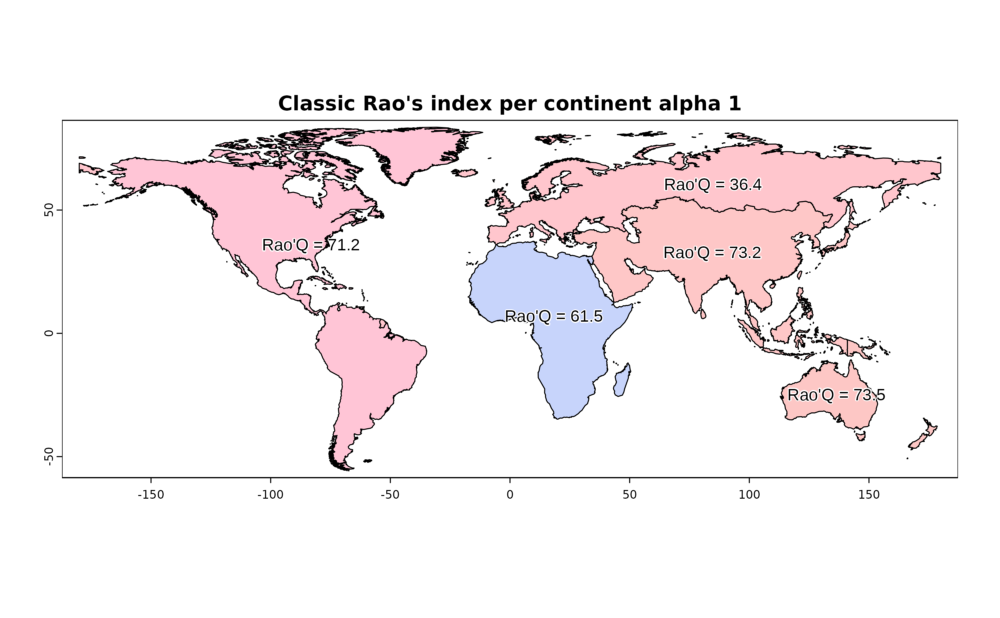
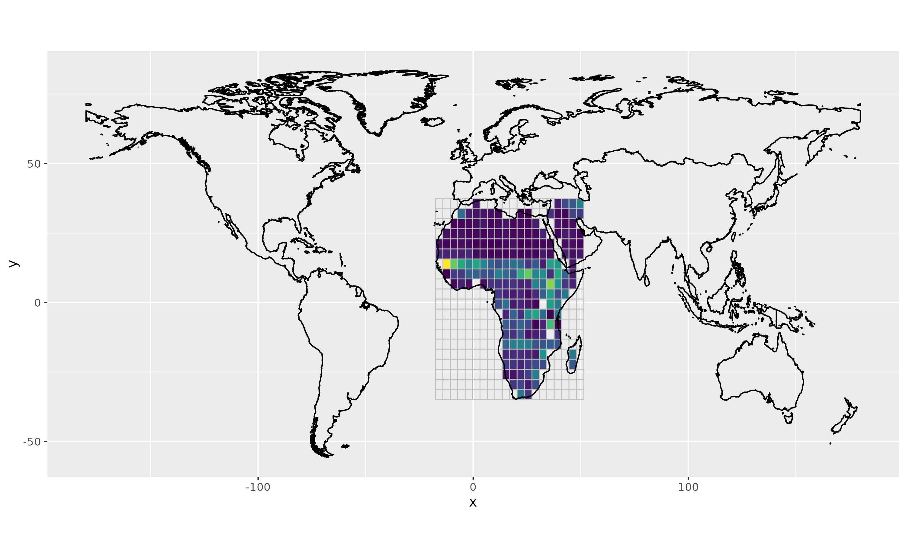

Area-based Rao's index.
Matteo Marcantonio
2024-05-20
Source:vignettes/rasterdiv_02_Area_based_Rao.Rmd
rasterdiv_02_Area_based_Rao.Rmd
require(rasterdiv)
require(terra)
require(rasterVis)
require(RColorBrewer)
require(viridis)
require(latticeExtra)
require(ggplot2)This vignette uses rasterdiv to derive classic and multidimension area-based Rao’s index from an input vector layer and multiple raster layers.
Overview
A SpatRaster called copNDVI is loaded together with the package
rasterdiv. copNDVI is a 8-bit raster, meaning
that pixel values range from 0 to 255. You could stretch it to
match a more familiar (-1,1) values range using
terra::stretch(copNDVI,minv=-1,maxv=1). The original
dataset was resampled to 1/10th of its spatial resolution and pixels
with values 253, 254 and 255 (water) were set as NA’s.
copNDVI <- load_copNDVI()
copNDVIlr <- terra::aggregate(copNDVI, fact=10)
values(copNDVIlr) <- as.integer(values(copNDVIlr))
world <- load_world()Compute Area based Rao’s Index
#Plot classic area-based Rao's index
plot(RaoC, col=hcl(RaoC$alpha.1*10), main="Classic Rao's index per continent alpha 1")
text(RaoC, label=paste("Rao'Q =", round(RaoC$alpha.1,1)), col="black", family="Arial", halo=TRUE)
Compute multidimension area-based Rao’s Index
# Adding a second "noise" SpatRaster layer
# copNDVIlr <- terra::aggregate(copNDVI, fact=20)
values(copNDVIlr) <- as.integer(values(copNDVIlr))
noise = rast(copNDVIlr)
noise[] = as.integer(runif(n=ncell(noise),min=1, max=10))
RaoMC <- paRao(x=c(copNDVIlr,noise), area=world, field='CONTINENT', alpha=2, method="multidimension", simplify=0)
#Plot area-based Rao's index
plot(RaoMC, col=hcl(RaoMC$alpha.2*10000), main="Multidimension Rao's index per continent alpha 10")
text(RaoMC, label=paste("Rao'Q =", round(RaoMC$alpha.2,3)), col="black", family="Arial", halo=TRUE)
Additional example subsetting on a continent and then using a grid vector to derive Rao’s in each cell
#Subset
africa <- subset(world, world$CONTINENT=="Africa")
#Make the raster grid
africa.r <- rast(ext(africa), nrow=20, ncol=20, crs = "+proj=longlat +datum=WGS84 +no_defs +ellps=WGS84 +towgs84=0,0,0")
africa.r[] <- 1:ncell(africa.r)
#Vectorise the SpatRaster
africa.v = as.polygons(africa.r)
#Derive Rao's (alpha=2) for each grid cell
RaoGRID <- paRao(x=copNDVIlr, area=africa.v, field='lyr.1', alpha=2, simplify=0, na.tolerance=0.2)
#Transform the spatial polygon data frame in a raster layer that can be used in levelplot
rr <- rast(RaoGRID,ncol=20, nrow=20)
values(rr) <- RaoGRID$alpha.2
#Plot Rao's per grid cell
ggplot() +
geom_raster(data = as.data.frame(rr, xy=TRUE), aes(x = x, y = y, fill = lyr.1)) +
scale_fill_viridis(option = "D", direction = 1) +
geom_polygon(data = fortify(as(africa.v, "Spatial")), aes(x = long, y = lat, group = group), fill = NA, color = "grey", linewidth=0.3) +
geom_polygon(data = fortify(as(world, "Spatial")), aes(x = long, y = lat, group = group), fill = NA, color = "black", , linewidth=0.5) +
theme(legend.position = "none", aspect.ratio = 0.5)